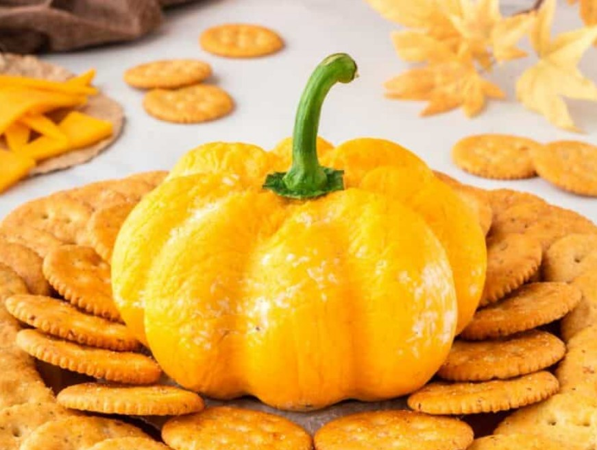

Pumpkin cheese dip

Ingredients
- 3 packs vegan cream cheese (I used the Tesco brand)
- 200 g vegan cheddar style cheese
- Handful of fresh chives
- Plastic foil to wrap into shape
- Rubber bands to shape pumpkin
- Stem of a bell pepper for decoration
- To serve: nachos and crackers
Preparation
- Mix the cream cheese with chopped chives and a handful of cheddar cheese
- At this point you can add anything you like, like herbs, jalapenos, gurkins etc.
- Use the rest of the cheddar cheese to cover the cheese ball
- Wrap the ball in plastic foil and wrap with 4 rubber bands to shape a pumpkin
- Refridgerate until firm, approx 1 hour or more
- Unwrap the foil, add the bell pepper stem and serve with your favorite crackers and nachos